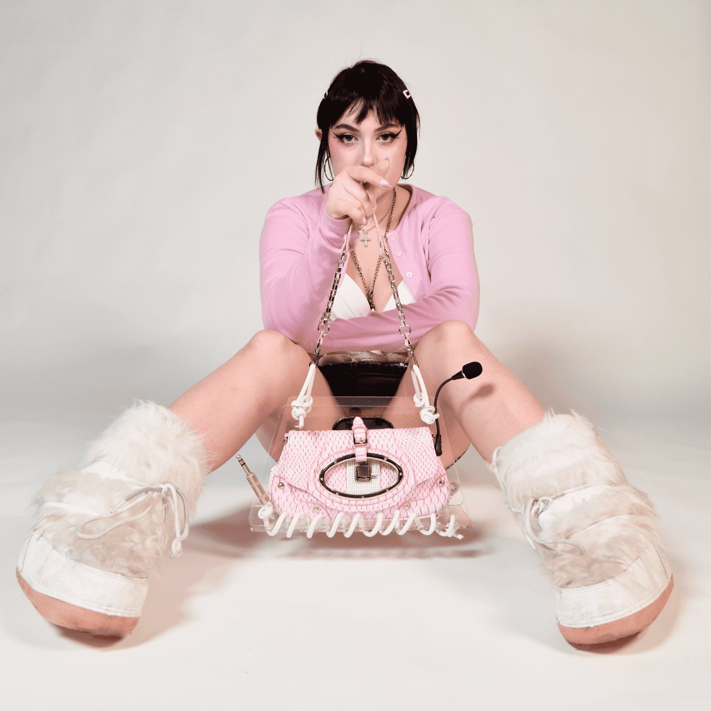
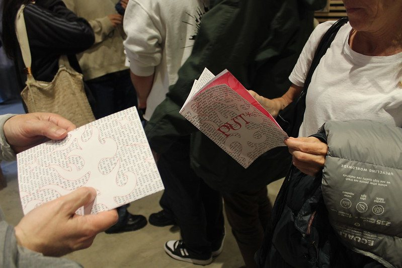
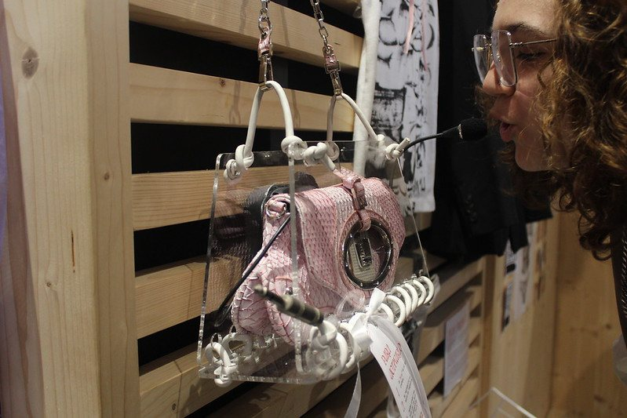

6. PUT*
Un bolso que censura términos misóginos con canciones que se los reapropian.


Si miramos el top 50 de Spotify, vemos lo normalizados que están los discursos misóginos, con una mayoría de hombres cis cantando sobre culos, putas, tetas y zorras.
Esta música y su lenguaje están en todas partes y difunden un mensaje dañino. Ante este problema, presento un artefacto crítico en forma de bolso capaz de identificar ciertos términos usados en letras de canciones, e incluso en el acoso callejero, y censurarlos. Mediante un micrófono detecta los términos despectivos y, a continuación, reproduce a todo volumen una canción en la que una cantante usa ese mismo término pero lo resignifica en positivo.
El objetivo principal de la propuesta es censurar los discursos misóginos y concienciar sobre su existencia. La sorpresa y el humor se usan de forma estratégica para captar la atención e interrumpir sin disimulo el discurso dañino.



De mediados de mayo a mediados de junio de 2023, el proyecto se expuso en la muestra colectiva “307 persones en 558 m3”, que ayudé a organizar.


Si quieres saber más del proyecto, pincha aquí para ver información adicional: referencias, textos inspiradores, resultados de la investigación, y también el código, tutoriales y esquemas para crear un sistema parecido.
También puedes ver el fanzine que hice del proyecto pinchando en la imagen.

Proyecto para la asignatura “Internet Mining”
3.º del Grado en Diseño de Interacción de ELISAVA, 2022
3.º del Grado en Diseño de Interacción de ELISAVA, 2022